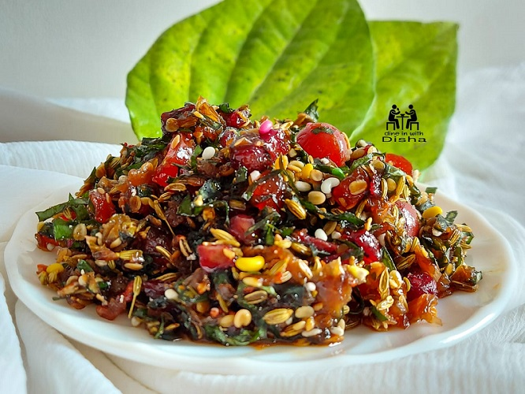

|
|
- 10 કાશ્મીરી પાન
- 2 ચમચી ગુલકંદ
- 2 ચમચી સલી સોપારી
- 2 ચમચી દાણા મીઠી સોપારી
- 1 ચમચી સુગંધી
- 1 ચમચી મીનાક્ષી ચટણી
- ચપટી કાથો
- 1-2 દાણા ઇજમેટ ના ફૂલ
- 100 ગ્રામ ધાણા ની દાળ
- 100 ગ્રામ વરિયાળી
- 4-6 ચમચી ટુટી ફૂટી
- 2 ચમચી જેલીના ટુકડા
- 3 ચમચી મીઠી ખારેક ના ટુકડા
- 2-3 ચમચી ખાંડ બોલ્સ
- 4-5 ચેરી
|
|
પાન ધોઇ કોરા કરી,ડીટીયા નો ભાગ કાપી જીણા સમાંરી લ્યો પંખામા ત્રણ થી ચાર કલાક રહેવા દયો
Step2:
કતરોટ માં ધાણા દાળ, વરિયાળી,સલીસોપરી, દાણા સોપારી, ગુલકંદ,ચટણી, ઉજમેટ ના ફૂલ, કાથો,ટુટી ફૂટી,જેલી ના ટુકડા,મીઠી ખારેક,ખાંડ બોલ્સ,સમારેલા પાન,ચેરી નાખી મિક્સ કરી લ્યો એક રાત ઢાંકી ને રહેવાદો પછી ઉપયોગ માં લ્યો
Step3:
તૈયાર છે સ્વાદિષ્ટ પાન મુખવાસ.